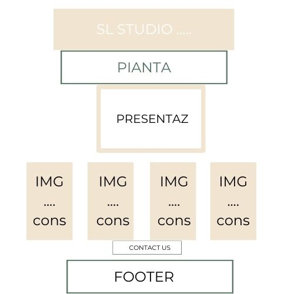
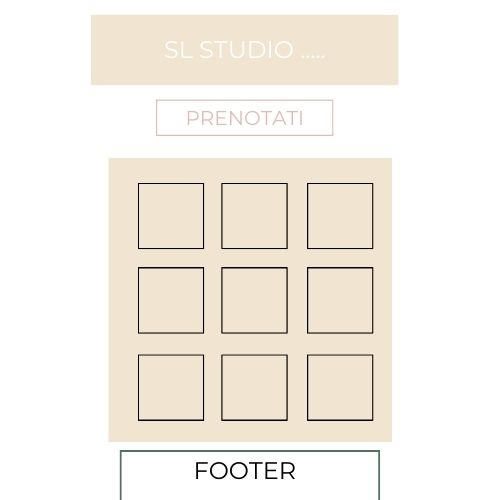
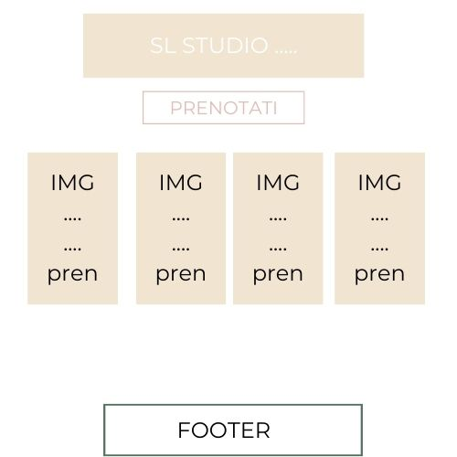
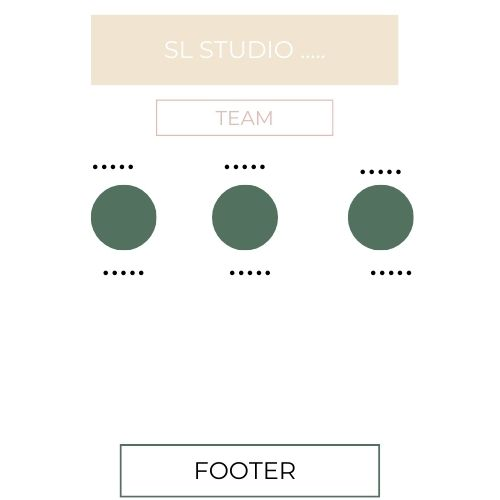
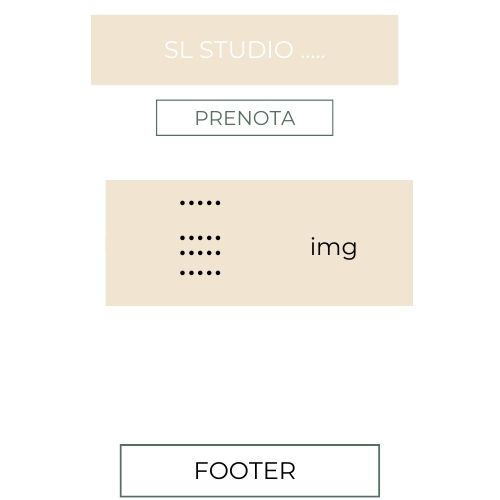
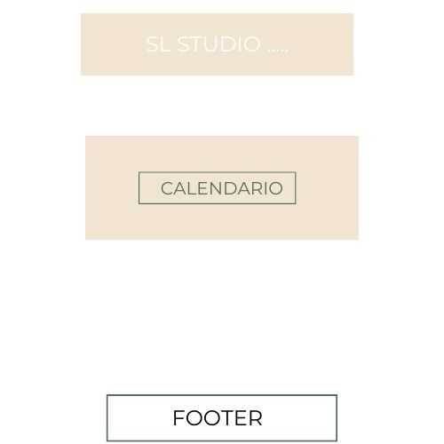
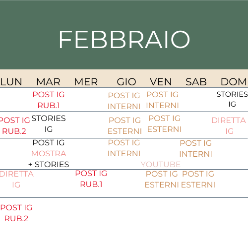
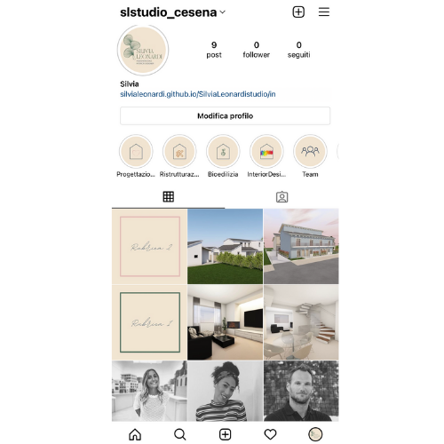
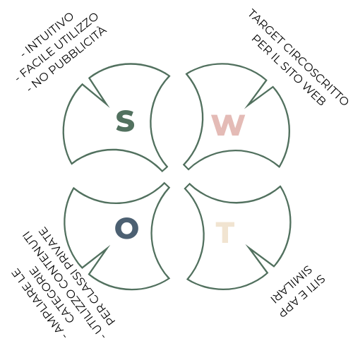

SL Studio è un sito che vuole farsi conoscere e offrire un servizio a 360 gradi sulla CASA, dalla consulenza, progettazione alla decisione degli interni. Attraverso i propri social network vuole attirare più persone possibili e creare un legame con il proprio pubblico (futuri possibili clienti).
• OBIETTIVI:
- Far scegliere e invogliare il cliente a decidere senza troppi vincoli e nel minor tempo possibile il servizio più adatto alle proprie esigenze.
- Creare un comunity attiva e consapevole.
- Aumentare le visite sul sito e i followers su Instagram.
• TARGET UTENTE:
Il sito è rivolto a tutti coloro che hanno voglia di cambiare almeno una parte del loro vissuto, in casa e/o prendere e dare spunto alla realizzazione dei progetti presi in carico dallo studio.
• COMPETITORS:
Il competitors principali sono INTERNO UNDICI, JS ARCHITETTI e BELLIARCH
• ARCHITETTURA DEL SITO:
• WIREFRAMES:
Home

Projects

Services

Team

Contact

Book

• LOOK AND FEEL:
Per il sito ho scelto di utilizzare quattro colori:
un verde, blu, beige e un rosa. Colori principalmente tenui per non appesantire le pagine, ho deciso di non usare nessuno sfondo per le pagine con più contenuti scritti, per non togliere il focus al testo permettendo all’utente di leggere senza troppe distrazioni.
I colori che ho scelto li ho selezionati, a mio gusto personale, perché mi trasmettono tranquillità e ordine mentale per prendere decisioni serenamente.
Ho alternato i vari colori in quasi tutta le pagine, principalmente il beige l'ho utilizzato nella barra di navigazione e lo sfondo di alcune sezioni, mentre gli altri li ho utilizzati per diversi elements (parole chiave, link, bottoni che permettono azioni).
Come font ho usato Montserrat e Roboto, due font serif semplici ma di impatto, non ho voluto mischiare troppe font per non creare disorientamento.
Le immagini che ho utilizzato anticipano il significato di quello che andrò a scoprire, cliccare.
• LINGUAGGI:
HTML e CSS
• STRUMENTI:
I competitors che ho preso in considerazione sono rinominati studi a Cesena, che comunicano il loro lavoro in maniera non precisa e confusionaria. Si concentrano su immagini strabilianti e sul dove trovarli;
l'obiettivo di SL studio è quello di entrare un pò nel cuore di chi vede il sito, che vuole ricostruire una parte o tutta la casa, partendo dai propri sentimenti, senza avere fretta e ricercando tutto il necessario insieme al team.
Una apporto che secondo me nella situazione storico sociale che stiamo affrontando è la possibilità di poter prenotare la prima consulenza con Silvia ed il suo team, in remoto o in presenza, senza dover passare tra chiamate e/o e-mail ma direttamente con un CLICK.
La possibilità di chiamare, mandare e-mail, oppure andare in studio di persona rimane ed è ben accolta, ma SL STUDIO vuole andare incontro a tutte le tipologie di clientela, senza privare nessuno della possibilità di ristrutturare una casa solo per la lontanza o perchè indisposti quella giornata.
Il sito è collegato anche ai vari social network, per dare diversi punti di acesso a questa realtà. Su Youtube si troveranno interviste di approfondimento, su Ig invece sarà la parte pulsante del progetto dove il pubblico potrà interagire e condividere senza usufruire dei servizi a pagamento che offre SL studio, ma di poter ampliare la propria conscenza attraverso materiale apposito creato per la comunity.
• TARGET AUDIENCE:
Il sito è rivolto a tutti, principalmente a un target di utenti con spazi da voler rivoluzionare, maggiorenni ma non solo perchè vuole essere uno spazio di condivisione.
• MESSAGGIO:
"Siamo una grande famiglia che vi può aiutare a realizzare il sogno nel cassetto! Siamo qui per accompagnarvi in questo percorso attraverso la nostra professionalità e competenza ma se avete voglia di condividere i vostri pensieri, ampliare le nostre conoscenze e temi di interesse noi siamo QUA!"
L'intento principale è stato quello di creare una Comunity, uno spazio partecipativo dove il pubblico oltre ad usufruire dei servizi offerti ha la possibilità di interessarsi all'argomento e di interagire. La narrazione del progetto si sviluppa lungo molteplici canali, dal sito web, a Instagram e Youtube. L'utenete ha la possibilità di avere un ruolo attivo e quindi anche influire sulla decisione di alcune azioni (di cosa parlare in una specifica rubrica o scegliere l'argomento da approfondire durante un'intervista su Youtube) Ho deciso di creare un PED per gestire in modo efficace la presenza su social network. Creando contenuti ad hoc studiati e sviluppati in base a quelli che sono le macrocategorie, creando una storia condivisa, un filo conduttore che le collega. Ho deciso di mostrare i volti e le storie delle persone che fanno parte del team dello studio, attraverso delle foto-ritratto accompagnate da bio e descrizione, foto e render dei progetti realizzati; di raccontare la nascita dello studio attraverso aneddoti e curiosità (creando empatia); trasformare gli stessi pareri dei clienti in storie da ricondividere nella Comunity creata.
• PIANO EDITORIALE:

• FEDD DI INSTAGRAM:
La pagina IG creata vuole essere esaustiva di informazioni, interattiva e partecipativa, vuole attrarre ma anche attivare il pubblico attraverso interazioni e conoscenza colletiva.


Il sito web ha raggiunto uno degli obiettivi prefissati velocemente: almeno 40 visite sul sito web da utenti unici
Grazie ai contenuti programmati e creati per Instagram e Youtube si spera di dare vita a un'ampia e attiva comunity.